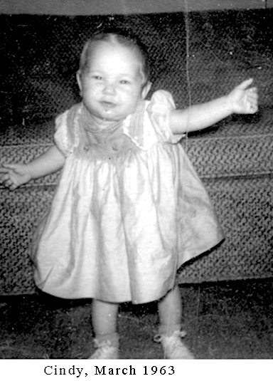

Cynthia Eileen Stark
Born August 3, 1962, in Eureka California, at St. Joseph Hospital.
My Mother, Eunice Stark, watched the other children: Theresa, 4 years old; Robby, 3; Tommy, 1 and a half. We lived in Freshwater, California when Cindy was born. I gave her a father's blessing in church on the first Sunday after she was born, after Dorothy and Cindy got out of the hospital, either August 5th or 12th 1962. No one beside Dorothy and our Children were there, but a lady came up to me after the blessing and said, "That was a wonderful blessing." I do not remember any of it after all this time.
Cindy burned herself on our wood stove after she started to walk. She also got into my books, which were alphabetized. I swatted at her and said "No!" She got so angry she wore herself out. After she was walking well, on September 5th, 1963 Cindy was walking around the house before I left for college. I rode my Honda 50 to a college class and then to the bakery.
Cindy wasn't feeling well when Dorothy took Theresa, Rob, and Tommy to Primary, which was on Tuesday at 4pm, and then took Cindy to Dr. Ely in Eureka. Dr. Ely said to give her an enema and bring her back in the morning for blood test. Dorothy collected all of the children and went home to Freshwater. At about 7:30 Dorothy called me. She said Cindy had stopped breathing. I rushed from the bakery, riding my bike toward Freshwater which was about 7 miles from Eureka. I met the ambulance on the old Arcata Road and rode to the hospital in it.
At the hospital I gave Cindy a blessing, but I had to ask them for olive oil and consecrated it first. Afterward the hospital doctor said, "She will not be the same little girl now if we could revive her." She had died.
Dorothy and I went out in the Redwood forest behind the hospital and cried.
I felt great peace over all of my body, knowing the blessing I had given Cindy a year before, soon after her birth, would be fulfilled.